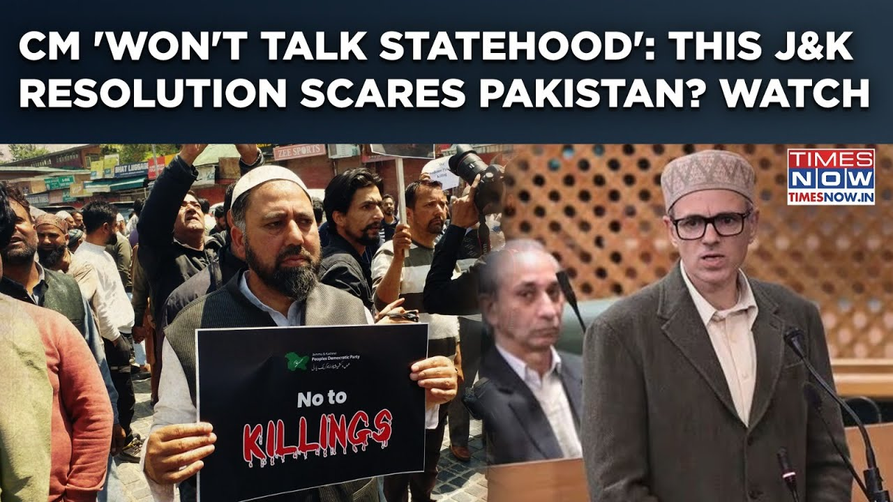

更多有意思的英语学习视频，请到B站Global每日双语简报！
【帕哈甘复仇：阿卜杜拉首席部长“不谈建邦”| 查谟和克什米尔议会决议吓到巴基斯坦？】
Summary: Chief Minister Abdullah refuses to exploit the tragedy for political gain, emphasizing unity and rejecting divisive narratives while condemning the attack.
摘要： 首席部长阿卜杜拉拒绝利用悲剧谋取政治利益，强调团结并谴责分裂言论，同时抨击此次袭击。

⏱️ Estimated Reading Time: 2 min
I will not use this opportunity to demand statehood.
我不会利用这个机会要求建邦。
Now with what face can I use this sentence of the message and tell the Markaz to give me the state now.
现在我有什么脸用这句话去告诉中央现在就给我建邦。
What am I, is this such cheap politics?
我算什么，这是如此廉价的政治吗？
Do I value the death of these 26 people so little that I will now go to the Markaz and say, ok, 26 people have died, now give me statehood.
难道我对这26人的死亡如此轻视，以至于现在去中央说，好吧，26人死了，现在给我建邦。
We have talked about statehood before and will do it in the future too, but shame on me if I go to the Markaz today saying, 26 people have died, give it to me now.
我们过去谈过建邦，未来也会谈，但如果我今天去中央说26人死了，现在就给我，那真是我的耻辱。
On this occasion, there was no politics, no business rules, no statehood, nothing, and I did not have words to say what to apologise to their families.
在这种场合，没有政治，没有商业规则，没有建邦，什么都没有，我甚至找不到话语向他们的家人道歉。
Knowing that the security of Jammu and Kashmir is not the responsibility of the government elected by the people of Jammu and Kashmir.
我知道查谟和克什米尔的安全并非由当地民选政府负责。
But even then, the people who did this say that they did it for our good.
但即便如此，做这件事的人却说他们是为了我们好。
But did we tell him that we want this, Speaker Sahib, for the first time in 26 years I have not seen people coming out like this after any attack in Jammu and Kashmir.
但我们告诉过他我们想要这样吗，议长先生，26年来我第一次看到查谟和克什米尔在袭击后民众如此大规模抗议。
From Kathwa to Kura, there was hardly any city or village where people did not come out and condemn this attack.
从卡图瓦到库拉，几乎没有哪个城镇或村庄的人不出来谴责这次袭击。
When we did not go with them in 47, why would we go with them today?
我们在47年没有跟他们走，今天又怎么会？
We threw the True Nation theory into the water then.
我们当时就把“真民族”理论扔进了水里。
And we are not ready to accept True Nation Theory even today.
即便今天我们也不接受“真民族”理论。
Hindus, Muslims, Sikhs, Christians, whatever we are, we are all one.
印度教徒、穆斯林、锡克教徒、基督徒，无论我们是谁，我们都是一体的。